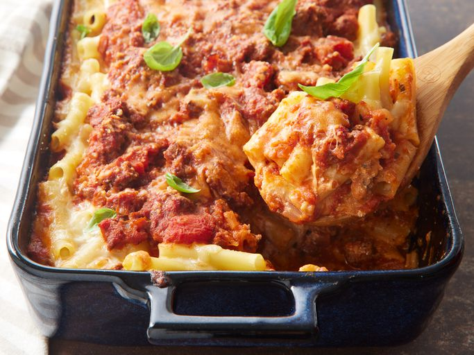

Odin Recipes
Home

Baked Ziti
This baked ziti is always a hit! A lady I worked with brought this in one day, and everyone loved it. Now it is the favorite of all my dinner guests. I have made this also without the meat, and it is well received.
Steps
- 1 pound dry ziti pasta
- 1 onion, chopped
- 1 pound lean ground beef
- 2 (26 ounce) jars spaghetti sauce
- 6 ounces provolone cheese, sliced
- 2 cups sour cream
- 6 ounces mozzarella cheese, shredded
- 2 tablespoons grated Paramesan cheese